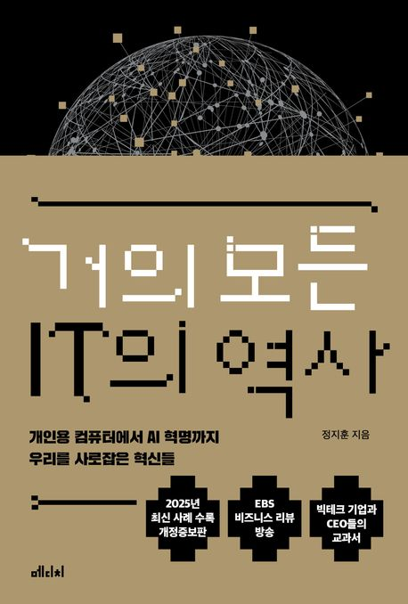

이 책은 현대 사회의 근간을 이루는 IT 산업의 태동기부터 오늘날의 AI 혁명에 이르기까지의 방대한 역사를 인문학적 시각으로 풀어낸 명저입니다.
단순히 기술적인 연대기를 나열하는 데 그치지 않고, 그 기술을 만들어낸 '사람'들의 철학과 열망, 그리고 그들 사이의 숙명적인 라이벌 관계에 집중합니다.
빌 게이츠와 스티브 잡스의 초기 시절부터 마이크로소프트의 독점 시대, 그리고 애플의 화려한 부활 과정을 한 편의 드라마처럼 생동감 있게 묘사합니다.
또한 구글이 어떻게 검색 엔진을 넘어 전 세계의 정보를 장악하는 데이터 제국으로 성장했는지에 대한 통찰력 있는 분석을 제공합니다.
기술의 패러다임이 개인용 컴퓨터(PC)에서 웹으로, 다시 모바일과 인공지능으로 전환되는 핵심적인 변곡점들을 명확하게 짚어줍니다.
독자들은 이 책을 통해 복잡하게 얽힌 글로벌 IT 생태계의 흐름을 한눈에 파악할 수 있는 넓은 시야를 갖게 될 것입니다.
저자 정지훈 박사는 비전공자도 이해하기 쉬운 서술 방식을 통해 기술이 인간의 삶과 문화를 어떻게 변화시켰는지 깊이 있게 탐구합니다.
단순한 과거의 기록을 넘어, 우리가 앞으로 맞이할 미래 기술 사회를 어떻게 대비해야 할지에 대한 소중한 나침반 역할을 합니다.
4차 산업혁명과 융합의 시대를 살아가는 현대인들에게 IT 지식은 이제 선택이 아닌 필수 교양이 되었음을 이 책은 증명하고 있습니다.
IT 산업의 거인들이 보여준 혁신과 도전 정신을 통해, 독자들은 자신만의 새로운 아이디어를 구상할 수 있는 영감을 얻게 될 것입니다.